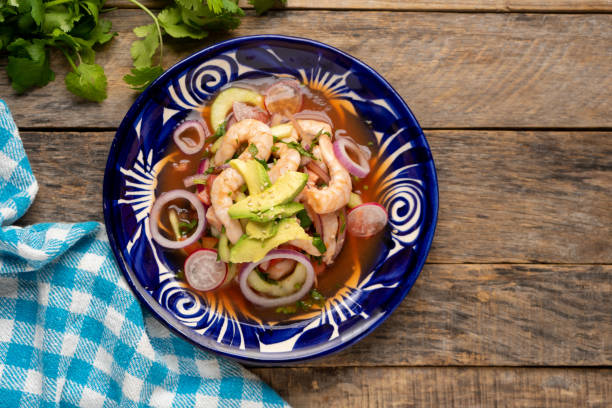

Mexican Ceviche Recipe

Description
This ceviche recipe is a staple in Mexico and features raw seafood cured with lime juice. Now don't wrinkle your nose! You would never know the seafood was not cooked before serving. Make sure to always use the freshest ingredients. Serve in fancy glasses with a lime slice hanging over the rim.
Ingredients
-
1 pound bay scallops
-
8 limes, juiced
-
2 stalks celery, sliced
-
2 tomatoes, diced
-
½ green bell pepper, minced
-
5 green onions, minced
-
½ cup chopped fresh parsley
-
⅛ cup chopped fresh cilantro
-
1 ½ tablespoons olive oil
-
freshly ground black pepper to taste
Steps
-
Gather all ingredients.
-
Rinse scallops and place in a medium bowl.
-
Pour lime juice over scallops; scallops should be completely immersed in lime juice.
-
Cover and chill in the refrigerator until scallops are opaque, 8 hours to overnight.
-
Discard 1/2 of the lime juice from the bowl.
-
Add celery, tomatoes, bell pepper, green onions, parsley, cilantro, olive oil, and black pepper; stir gently until combined.
-
Serve and enjoy!
Home